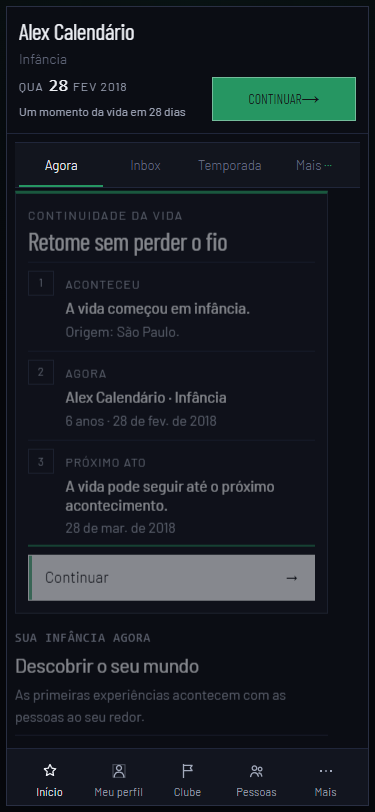
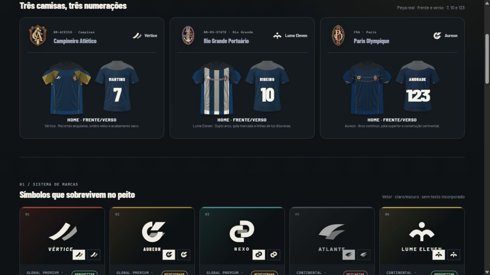
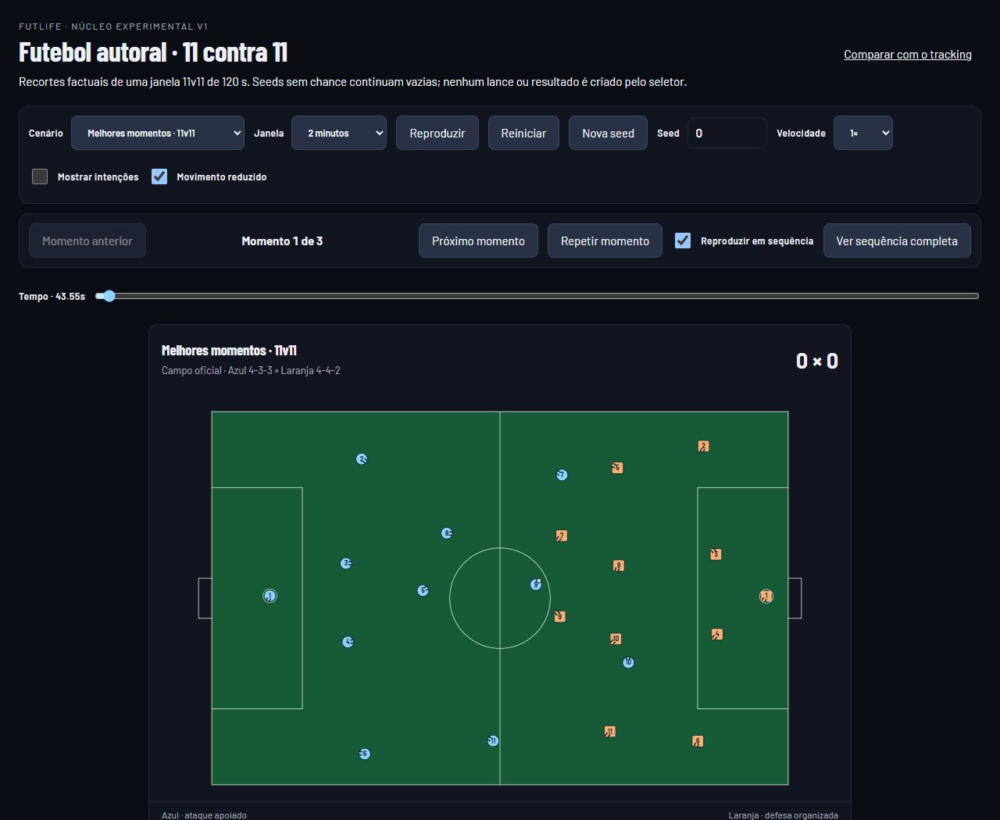

O que é o Futlife
Futlife é um jogo de futebol narrativo: um simulador de vida e de carreira esportiva em que você acompanha uma pessoa, e não um clube. A vida começa na infância, com escola, escolinha e família, e segue por peneiras, categorias de base, contratos, temporadas e aposentadoria.
O jogador escolhe como se preparar, com quem se relacionar e como responder aos acontecimentos. O desempenho em campo é resolvido pela simulação: não existe botão de vitória, e cada decisão deixa consequências registradas na biografia.
Imagens do projeto
A vida no painel inicial

Identidade dos clubes e camisa vista por trás

Futebol em campo

O que já existe
- Criação de personagem, infância, escola, escolinha e categorias de base.
- Carreira de atleta com temporadas, contratos, relações e consequências persistidas.
- Partidas com Match Day 2D e leitura das causas no pós-jogo.
- Continuidade da mesma biografia em capítulos de técnico e de dono, conforme a trajetória.
- Mundo com clubes, competições, pessoas, imprensa e memória da carreira.
- Saves versionados para interromper e retomar a vida.
Como foi construído
O núcleo é um motor determinístico em TypeScript: decisões produzem fatos e histórico causal persistidos, e os saves são versionados e migráveis. Uma API com SQLite serve a interface web responsiva em React e Vite. Contratos, regras de domínio, serviço e interface ficam separados para que a simulação continue independente das telas.
Experimentar a alpha
A alpha online exige convite e senha de acesso. Para manifestar interesse em testar, abra uma issue contando brevemente que tipo de experiência você gostaria de avaliar. Não publique dados pessoais ou senhas na issue.